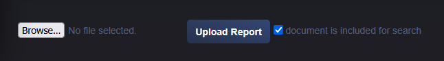
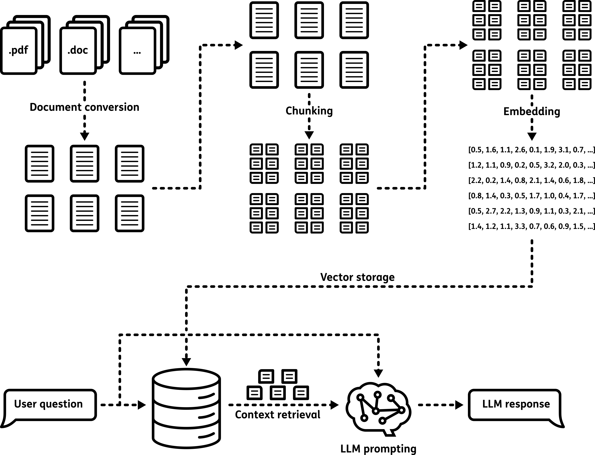

4.8. Chat Assistant
4.8.1. Description
The Chat Assistant lets users ask natural-language questions about uploaded project documents. It is based on Retrieval-Augmented Generation (RAG), which combines semantic search with LLM-based answer generation.
4.8.2. Document Inventory
To use the assistant, documents must first be uploaded (PDF format) through INFO -> REPORT. This interface allows users to upload new reports and browse existing ones. When uploading a report, the user can enable the option “document is included for search” to make the report available to the Chat Assistant.
{kind=link}

Fig. 4.1 By enabling the checkbox “document is included for search”, the uploaded report will be indexed and made available to the Chat Assistant for answering user questions.
4.8.3. Document Processing
Uploaded PDF files are automatically processed by the system. The text is extracted and split into small sections (chunks). Each chunk is transformed into a numerical representation (embedding) that allows efficient comparison with user questions. Each report is stored as a set of chunks in a database, dedicated for the Chat Assistant.
The pipeline supports English and Dutch documents. Dutch content is translated for improved LLM processing consistency.
4.8.4. Retrieval and generation
The Chat Assistant uses a two-step process called Retrieval-Augmented Generation:
{kind=link}

Fig. 4.2 Schematic explaining the workflow of the Retrieval-Augmented Generation method. The process includes the indexing the documents, retrieving the context and generating the response.
Retrieval: the question is embedded and compared with stored document embeddings; the most relevant chunks are selected as context.
Generation: the selected context and question are sent to the LLM, which produces the answer shown in the interface.
4.8.5. Answer Quality and Best Practices
Answer quality depends on:
question clarity and specificity
document quality and structure
model capability for the selected task
Consistent report formatting and concise questions generally improve response quality.
If the first answer is not satisfactory:
ask narrower and more specific questions
use terms present in the reports
break complex requests into smaller queries
For transparency and validation, the Chat Assistant includes a list of the document parts (citations) that were used to generate the answer. These citations allow users to:
Check the source of the information
Verify the accuracy of the AI-generated response
Identify which reports are most relevant to the question
By reviewing citations, users can validate the response and inspect source text directly. For high-stakes decisions, always verify critical outputs.
RAG systems involve a trade-off between response speed and answer quality. Larger models are usually more accurate but slower.
The framework supports multiple LLMs. See Chat Assistant setup for model configuration.